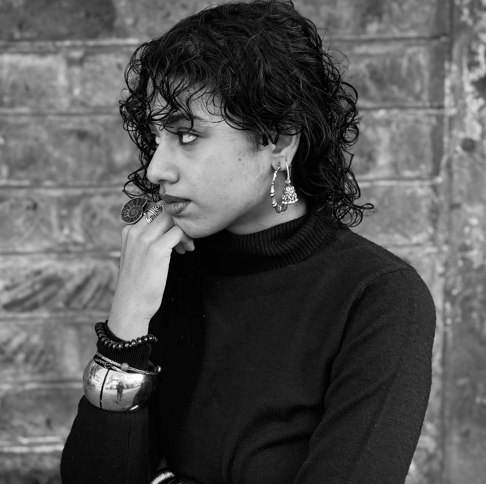
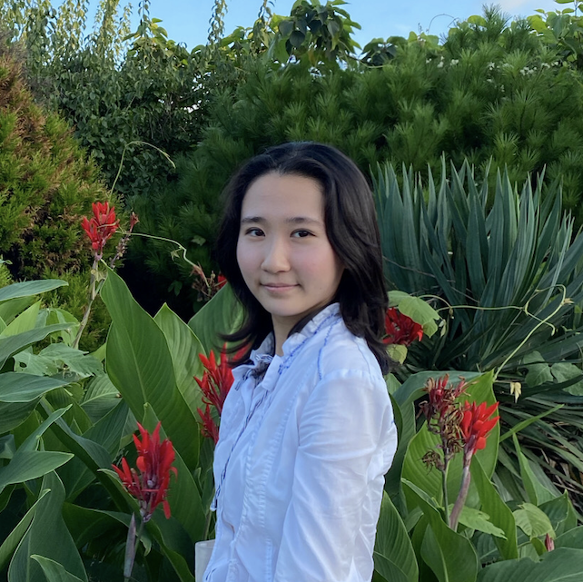
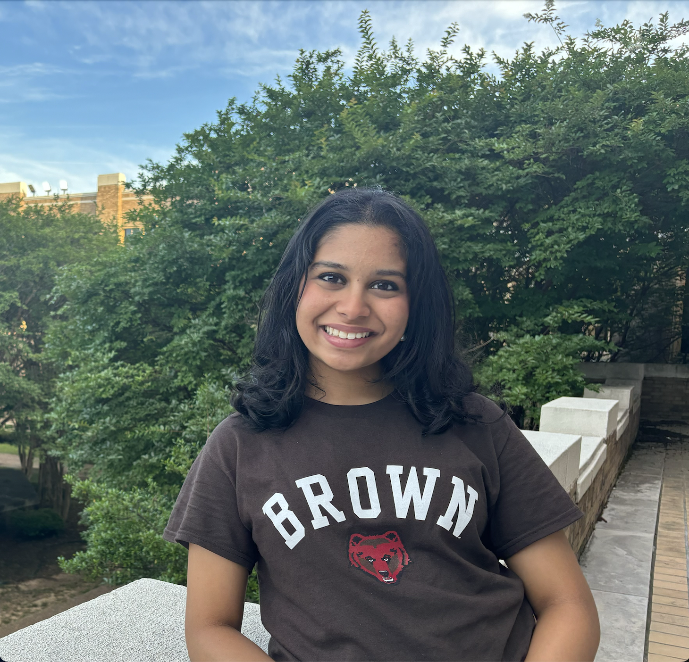

Meet our Team
Leadership

President
Rebecca Blumenthal ‘25
Economics-Public Policy

Research VP
Aditya Lodha '25
History

Project Development VP
Clara Tandar '25
Biomedical Engineering & International and Public Affairs

Mental Health Co-Lead
Kate Kuli ‘25
Political Science & Philosophy
Mental Health Co-Lead
Caroline O'Brien ‘27
Neuroscience
Executive Board Member
Camille O'Mara '27
English & Africana Studies
Confession Accountability Co-Lead
Tia Williams ‘27
Political Science and Economics

Confession Accountability Co-Lead
Lily Zamora ‘26
Political Science & Economics

Community Health Co-Lead
Isabel Hernandez '26
Economics & International and Public Affairs
Community Health Co-Lead
Kenneth Kalu '27
Public Health
HOME Co-Lead
Colin Carter '27
International and Public Affairs

HOME Co-Lead
Riya Srinivasan '27
Political Science
Multilingual Education Co-Lead
Brianna Paliz '27
Political Science & Economics

Multilingual Education Co-Lead
Maria Camacho '27
Education
Overdose Prevention Co-Lead
Turner Lie-Nielsen '28
International and Public Affairs and Classics
Overdose Prevention Co-Lead
Joshua Ellsworth '28
International and Public Affairs
Digital Equity Co-Lead
Amber Zhao '27
International and Public Affairs
Digital Equity Co-Lead
Nicolaas Schmid '27
Political Science
Analysts

Mental Health Analyst
Robert Carr '25
Neuroscience & Urban Studies
Mental Health Analyst
Gavin Schilling '25.5
International and Public Affairs & Economics
Mental Health Analyst
Porter Culp '28
Public Health & Economics (Public Policy)
Confession Accountability Analyst
Ava Cloonan '25
International and Public Affairs

Confession Accountability Analyst
Marissa Scott '26
International and Public Affairs & Visual Arts
Confession Accountability Analyst
Nash Riebe '27
Political Science & Philosophy

Confession Accountability Analyst
Ava McKie '28
International and Public Affairs & Education

Confession Accountability Analyst
Junkai Gong '27
International and Public Affairs

Confession Accountability Analyst
Tarini Tipnis '26
Visual Art & Religious Studies
HOME Analyst
Petros Engelhardt '27
Public Health

HOME Analyst
Mimi Ruedaflores '28
International and Public Affairs
HOME Analyst
Tiziano Pardo '28
Political Science & International and Public Affairs

Multilingual Education Analyst
Esha Patel '26
Applied Mathematics-Economics & History
Multilingual Education Analyst
Craig Chiu '27
Computer Science-Economics & International and Public Affairs
Multilingual Education Analyst
Renee Kuo '27
History & International and Public Affairs
Multilingual Education Analyst
Celia Peña '28
International and Public Affairs & Sociology

Multilingual Education Analyst
Dimitra Sofianou '26
International and Public Affairs
Multilingual Education Analyst
Faith Li '27
International and Public Affairs

Community Health Analyst
Emma Jeong '27
Business Economics
Community Health Analyst
Louis Boyang '27
Economics-Public Policy

Overdose Prevention Analyst
Ananya Uddanti '28
International and Public Affairs and Health and Human Biology
Overdose Prevention Analyst
Vivek Rajani '25
Biochemistry and Molecular Biology & International and Public Affairs

Digital Equity Analyst
Daniella Goldrich '27
Applied Math
Former Mental Health Co-Lead
Maia Eng '26
International and Public Affairs
Former Confession Accountability Co-Lead
Julian Cohen ‘26
History & International and Public Affairs

Former Community Health Co-Lead
AJ Wu '26
Computer Science & Economics

Former Multilingual Education Co-Lead
Marcelo Rodriguez Parra '26
Computer Science-Economics & International and Public Affairs

Former Multilingual Education Co-Lead
Kayla Morrison '26
Political Science & Social Analysis and Research

Former BIPTA Lead
Maddock Thomas '26
Critical Theory and Political Economy & Urban Studies
Non-Profit Economics Analyst
Zoe Kaufman '27
Political Science